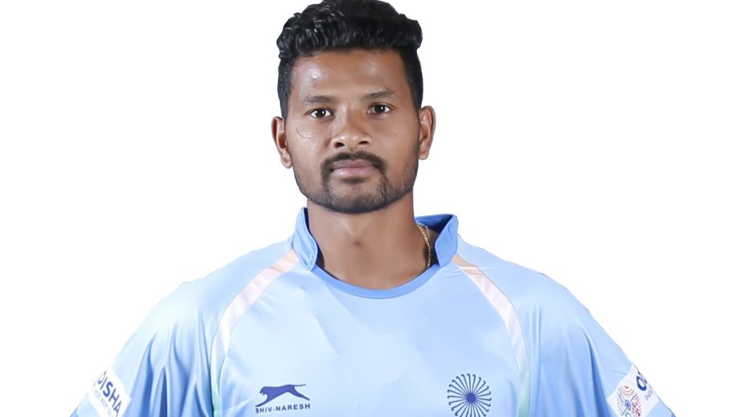

Contents |
No BCCI office-bearers for World Test Championship final due to quarantine rules The families of players and support staff of both the Indian men’s and women’s cricket teams will be allowed to accompany them during their lengthy tour of England this month, a senior BCCI source revealed on Tuesday. The BCCI had put in a request that the players be allowed the company of their loved ones given that they have to spend a considerable amount of time in a bio-secure bubble because of the COVID-19 pandemic. However, it is learnt that none of the BCCI office-bearers, including president Sourav Ganguly and secretary Jay Shah will be present for the World Test Championship final against New Zealand in Southampton from June 18-22, due to the strict quarantine rules of the country. “Yes, it’s good news that players will have their families during the tour of U.K.. Ditto for the women’s team who can also have their families around. These are times when mental well-being of players is paramount,” said an official. “The BCCI understands that we need our players and support staff to be in a good head space,” he said. However, he also informed that Ganguly and Shah, who were originally supposed to be in England for the WTC final won’t be going there for the time being.
“As far as I know, the ECB didn’t grant permission to them (Ganguly and Shah). Normally, administrators go before the Test match but as per quarantine rules, since they are not playing members, they would have had to undergo hard quarantine of 10 days,” the official said “The team rules wouldn’t have been applicable as far as president and secretary is concerned,” he further added. The Indian men’s and women’s teams will be leaving for Southampton after their London touchdown. While India women play their one-off Test in Bristol from June 16-19, they will also do their hard quarantine in Southampton along with the men’s contingent at Hotel Hilton which is a part of the Hampshire Bowl property. The women are supposed to travel to Bristol on completion of their hard quarantine in Southampton. Both Indian teams have served a 14-day quarantine period (home plus hotel) in India and undergone six RT-PCR negative tests which allow them to board the charter flight to London on Wednesday. It is expected that they will have three days of hard quarantine (room) and then they can use the gymnasium as well as start their skills (net) training. The 24-member men’s team is supposed to play an intra-squad three-day practice game to get into the groove.
Havertz ran onto a magnificent pass from Mason Mount to grab the winner for Chelsea on 42 minutes Chelsea won the Champions League for the second time as a Kai Havertz goal secured a tense 1-0 victory over Manchester City in Saturday's final in Porto, shattering Pep Guardiola's dream of lifting the trophy for the third time, a decade on from his last triumph. Havertz rounded Ederson to score three minutes before half-time at the Estadio do Dragao and the Chelsea players ran to the far end of the pitch to celebrate with the German. Coach Thomas Tuchel, full of energy on the touchline just like his opposite number, punched the air in celebration, and later jumped with joy on the pitch after Chelsea held on for victory in the second half as City lost distraught skipper Kevin De Bruyne to injury. The London club may have finished fourth in the Premier League, a huge 19 points behind the champions City, but this, remarkably, was their third win over Guardiola's side in six weeks. They ended City's hopes of a domestic treble when they triumphed in the FA Cup semi-finals in April and then delayed their title celebrations with victory in Manchester. Now, in a final watched by a limited crowd of just over 14,000 fans who created a raucous atmosphere, they have denied City the first Champions League crown they and Guardiola so crave. "It was an incredibly tough fight, what a fight. Today they were determined to win this. We wanted to be the stone in their shoe," Tuchel told BT Sport. Abramovich's second European Cup City have had to wait 13 years since being taken over by Abu Dhabi's Sheikh Mansour just to get to the Champions League final. They are now the seventh consecutive team to lose in their first appearance at this stage. The same misfortune befell Qatar-owned Paris Saint-Germain last year as well as Tottenham Hotspur when they were beaten by Liverpool in the last all-English final in 2019. "It is the first time we're here, we'll learn, we'll come back," Guardiola told French broadcaster RMC Sport. "The players did everything, they wanted to do well, to win this competition, sometimes you perform well, sometimes not." Chelsea also lost when they first got to the final, on penalties against Manchester United in Moscow in 2008. They overcame the final hurdle by beating Bayern Munich in a shoot-out in 2012 and now they have their second European Cup to move level with Juventus, Benfica and Porto as well as another English side, Nottingham Forest. Their transformation into one of Europe's super clubs has been down to the riches of Roman Abramovich, their Russian oligarch owner who was in attendance at the game in Portugal. "It's such a special occasion. At this moment in time, we're the best team in the world. You can't take that away from us," Mason Mount, outstanding for the Stamford Bridge side this season, told BT Sport. Chelsea have been transformed since the appointment as coach in January of Tuchel, but City were still the favourites after their third Premier League title triumph in four seasons. Feeding off the energy of the crowd in a stadium filled to a third of its capacity -- all fans required negative Covid-19 tests to gain entry -- both teams played with a level of intensity rarely seen in the last year of football in empty grounds. .

Havertz's marquee moment City pressed high but struggled to trouble Edouard Mendy in the Chelsea goal, while at the other end Timo Werner should have done better than shoot straight at Ederson in the 14th minute. Chelsea then suffered an injury blow as an emotional Thiago Silva was forced off hurt, Andreas Christensen taking the Brazilian's place in central defence. Yet it was they who opened the scoring in the 42nd minute, Mason Mount's ball splitting the City defence, allowing Havertz -- their marquee 71 million-pound ($100m) signing last summer -- to go around the lunging Ederson and convert into an empty net. City now needed to break down a Chelsea defence that has been exceptional under Tuchel. But they lost De Bruyne just before the hour mark, the Belgian taken out in a collision with Antonio Ruediger that appeared to leave him concussed. He came off in tears, and Guardiola instead turned to Sergio Aguero for the latter stages, but there was to be no glorious send-off as a City player for the Argentine, as a Riyad Mahrez shot sailed just over in the sixth minute of injury time. There was also no third European Cup for Guardiola, who remains one adrift of the record for the coaches with most wins in the competition, held jointly by Bob Paisley, Carlo Ancelotti and Zinedine Zidane.
Lakra, who has played 196 matches for the Indian team, missed out on the Rio Olympics due to a knee injury. He is still unsure about his place in the Indian hockey team but defender Birendra Lakra is determined to make the cut for the Tokyo Games and make it count. Lakra, who has played 196 matches for the Indian team, missed out on the Rio Olympics due to a knee injury. “It was really hard time for me in 2016 when I missed out on the chance of representing India in the Rio Olympics. After my recovery, my sole goal has been to ensure that I am fit and absolutely ready for the Tokyo Olympics,” Lakra was quoted as saying in a media release. “I have worked very hard on my game in the last five years, and I am very determined to make it to the Indian squad for the Tokyo Olympics. I am ensuring that I am playing at my absolute best during practice and giving my 100% in every training session,” Lakra added.

The defender asserted that Indian team’s bench strength is now such that no player can take his place for granted the side. “Even though I am one of the most experienced players in the Indian side, my place in the team is not guaranteed. There is a lot of competition for each of the positions and that is what keeps all of us on our toes. Everyone is determined to play and perform for India and therefore all of us make sure that we are giving everything we have during every practice session. Apart from skill development, we also make sure that we are giving enough attention to our fitness regimes as well,” said Lakra. The 31-year-old said that the recent tour of Argentina has given the players a lot of confidence. “We played very well as a unit, and we took away a lot of positives from that tour. We noted down a few things that we need to work on post the tour and we are currently working on each of them at SAI. By the time the Olympics start, I think we will be fully prepared to play at our best,” he said.
The 23-year-old Japanese star was fined $15,000 and threatened with disqualification after she refused to carry out a mandatory news conference. Naomi Osaka said on Monday she was withdrawing from the French Open following the bitter fall-out from her decision to boycott all media activity at the Grand Slam event. “The best thing for the tournament, the other players and my well-being is that I withdraw so that everyone can get back to focusing on the tennis going on in Paris,” the world number two wrote on Twitter. The 23-year-old Japanese star was fined $15,000 on Sunday and threatened with disqualification after she refused to carry out a mandatory news conference following her first round win. She claimed on the eve of Roland Garros that such post-match inquests were akin to “kicking people when they are down” and that they had a detrimental effect on her mental health.

“I never wanted to be a distraction and I accept that my timing was not ideal and my message could have been clearer,” the four-time Grand Slam title winner said in her statement. “The truth is I have suffered bouts of depression since the U.S. Open in 2018 and I have had a really hard time coping with that.” She added: “In Paris, I was already feeling vulnerable and anxious so I thought it was better to exercise self-care and skip the press conferences. “I announced it preemptively because I do feel like the rules are quite out-dated in parts and I wanted to highlight that.”
Seven-time World champion Lewis Hamilton became the first Formula One driver to take 100 pole positions after lapping fastest in Spanish Grand Prix qualifying on Saturday. The 36-year-old Mercedes driver was already the record holder by a massive margin, with retired Ferrari great and fellow seven-time champion Michael Schumacher second on the list with 68. Red Bull’s Max Verstappen qualified on the front row alongside the championship-leading Briton, who has an eight- point lead over the Dutch driver, with Valtteri Bottas qualifying third for Mercedes. “I feel very humble and very grateful. I’m ecstatic, like it’s my first,” said Hamilton after the session at the Circuit de Catalunya.
“I can’t believe we’re at 100 and it’s down to the men and women back at the factory who are continuously raising the bar and never giving up,” said Hamilton, who will be chasing a record-extending 98th career win on Sunday. “The support that I have, it’s a dream for me to work with these guys and the journey that we have been on has been immense.” Hamilton, who took his first pole with McLaren in 2007, had set the fastest time of one minute 16.741 seconds with his first flying lap of the final phase and was unable to improve on it with his second. Ferrari’s Charles Leclerc qualified fourth with Esteban Ocon fifth on the grid for Alpine ahead of Ferrari’s Spaniard Carlos Sainz.